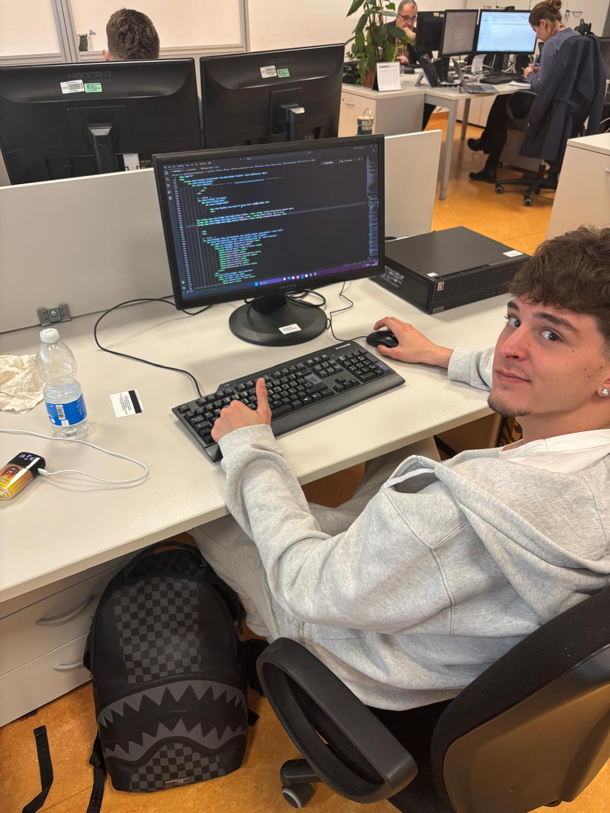
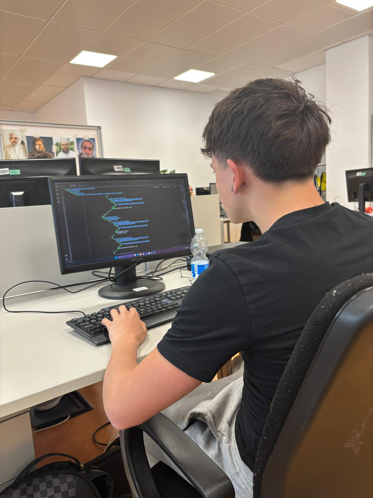

Settore Produttivo
A.S.S.T. Rhodenseopera nel settore Ospedaliero,

A.S.S.T. Rhodenseopera nel settore Ospedaliero,
Fondata nel 1 gennaio 2016
L’ASST Rhodense, afferente all’ATS della Città Metropolitana di Milano, comprende il territorio e le strutture sanitarie e sociosanitarie degli ex Distretti ASL di Rho, Garbagnate e Corsico, nonché le strutture Ospedaliere dell’ex Azienda Ospedaliera "Guido Salvini".


Viale Forlanini, 121 — 20024 Garbagnate Milanese (MI)